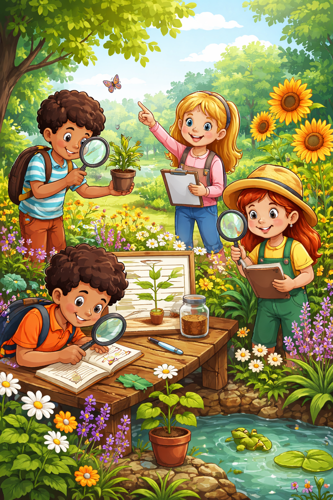

PRESENTACIÓN Y DESCRIPCIÓN DEL PROYECTO
Hola a todos:
Hoy os presentamos el trabajo realizado por mi alumnado de 4.º de Primaria sobre el estudio de las plantas y su importancia para la vida en nuestro planeta.
Partiendo del entorno cercano del alumnado, este proyecto pretende que los alumnos descubran cómo son las plantas, cuáles son sus partes, qué necesitan para vivir y por qué son tan importantes para los seres vivos. Además, conoceremos algunas plantas características de Andalucía, valorando la riqueza natural que nos rodea.
La ciencia y la curiosidad van de la mano: con este proyecto queremos despertar el interés por la naturaleza, fomentar el respeto por el medio ambiente y acercarnos al fascinante mundo de las plantas.
¡Vamos a disfrutar!

TAREA 2.1.
Situación de aprendizaje:
“EXPLORADORES DE LAS PLANTAS”
Centro de interés o temática:
El proyecto se centra en el estudio de las plantas y su importancia para la vida en el planeta, partiendo del entorno cercano del alumnado. Se pretende que el alumnado descubra cómo son las plantas, cuáles son sus partes, qué necesitan para vivir y por qué son tan importantes para los seres vivos. Además, se trabajarán algunas plantas características de Andalucía.
Nivel al que va dirigido:
Esta situación de aprendizaje va dirigida a 4º. de Educación Primaria.
Temporalización aproximada:
Este proyecto se llevará a cabo en el primer trimestre, con una duración aproximada de 8 sesiones dentro del área de Conocimiento del Medio.
Materia o materias implicadas:
Aunque el proyecto se trabaja principalmente desde el área de Conocimiento del Medio, también se relaciona con otras áreas:
- Lengua Castellana y Literatura: a través de la lectura de información, la expresión oral y la elaboración de descripciones.
- Educación Artística: mediante la elaboración de dibujos o carteles relacionados con las plantas.
- Matemáticas: a través del registro de datos y elaboración de tablas o gráficos.
Idioma:
Las actividades se desarrollarán en español, fomentando la participación oral del alumnado y el uso de vocabulario relacionado con las plantas y la naturaleza.
Descripción general de lo que se pretende que el alumnado aprenda o trabaje:
Con este proyecto se pretende que el alumnado conozca las características de las plantas, sus partes y sus funciones, así como la importancia que tienen para la vida en el planeta. A lo largo de las diferentes sesiones, los alumnos y alumnas investigarán sobre las plantas utilizando diferentes recursos digitales cómo vídeos educativos, imágenes, presentaciones o actividades interactivas. También se fomentará la observación directa, por ejemplo mediante la observación de plantas del entorno cercano o el cuidado de una pequeña planta en el aula registrando las datos de su crecimiento. Además, se investigará sobre algunas plantas de Andalucía, como el olivo, romero o el tomillo. Las actividades se desarrollarán mediante el trabajo cooperativo, favoreciendo la participación, el diálogo y el intercambio de ideas entre el alumnado.
Como producto final, vamos a crear la revista “Ecoexploradores” a través de la herramienta de Genially en la que se explicará todo lo trabajado en las diferentes sesiones (partes de una planta, sus funciones, plantas de Andalucía).
Reflexiona y argumenta su elección teniendo en cuenta la rutina de pensamiento realizada en la tarea 1.1
He elegido la situación de aprendizaje “Exploradores de las plantas” porque creo que es muy importante que el alumnado aprenda de manera activa y cercana a su entorno. Para tomar esta decisión me apoyé en la rutina de pensamiento del modelo reflexivo de Gibbs, que utilicé en la tarea 1.1. Esta rutina me permitió analizar la experiencia paso a paso: describir lo que pasaba en clase, identificar mis sentimientos, evaluar lo que funcionó y lo que no, reflexionar sobre por qué ocurrieron los resultados y, finalmente, pensar en cómo podría mejorar mi actuación como docente.
Aplicando Gibbs a la planificación de este proyecto, pude ver que integrar recursos digitales, actividades de observación y trabajo cooperativo ayudaría a motivar al alumnado y a fomentar la participación. También me permitió anticipar posibles dificultades, como alumnos y alumnas con menos experiencia tecnológica o que necesitaran más apoyo para comprender los contenidos sobre las plantas, y planificar estrategias para acompañarlos de manera cercana y efectiva.
La elección de este proyecto surge de la reflexión sobre cómo el alumnado aprende mejor: investigando, observando, creando y compartiendo sus aprendizajes. Además, me ayudó a valorar cómo organizar la secuencia de actividades, combinar diferentes áreas curriculares y ofrecer experiencias significativas para que todos pudieran participar y sentirse protagonistas de su aprendizaje.